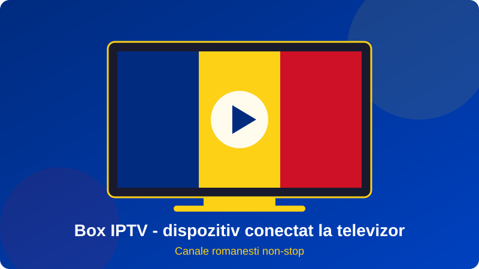
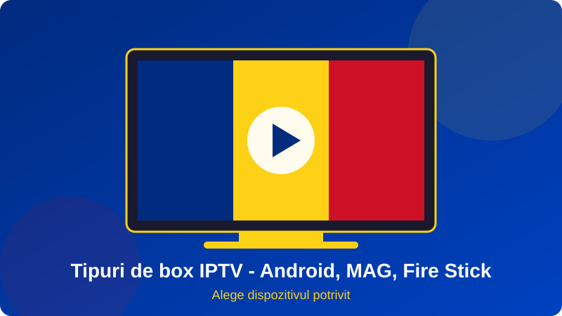

Daca vrei sa vezi canalele preferate pe televizorul din sufragerie, indiferent unde locuiesti, un box iptv este una dintre cele mai simple si mai ieftine solutii. In loc sa platesti abonamente scumpe la cablu sau sa instalezi o antena parabolica, conectezi un mic dispozitiv la televizor si ai acces la sute de canale prin internet. Din acest motiv, expresia box iptv este tot mai cautata de romanii din tara si din strainatate.
Totusi, piata este plina de modele, promisiuni si preturi foarte diferite. Un box iptv prost ales se incinge, se blocheaza si te lasa fara imagine fix in timpul meciului sau al jurnalului. De aceea, in acest ghid explicam pe intelesul tuturor ce este un box iptv, ce tipuri exista, cum il alegi, cum il configurezi si cum eviti cele mai frecvente probleme.
Ne concentram pe nevoile publicului vorbitor de limba romana: canale nationale, programe pentru copii, sport, stiri si filme, toate disponibile si pentru familiile aflate in diaspora. La final gasesti un set de intrebari frecvente si pasii concreti pentru a incepe in aceeasi zi, cu ajutorul echipei Romania IPTV.

Cuprins
- Ce este un dispozitiv si cum functioneaza
- Avantajele unui box iptv fata de cablu si satelit
- Tipuri de box iptv: Android, Linux si MAG
- Cum alegi cel mai bun box iptv
- Configurarea pas cu pas a unui box iptv
- Canale romanesti pe box iptv
- Probleme frecvente si solutii
- Box iptv pentru romanii din diaspora
- Intrebari frecvente despre box iptv
Ce este un dispozitiv si cum functioneaza
Un box iptv este un mic calculator dedicat, de obicei de marimea unui pachet de carti, care primeste semnalul de televiziune prin internet (IPTV, adica Internet Protocol Television) si il trimite catre televizor prin cablu HDMI. Spre deosebire de televiziunea clasica, nu exista un semnal radio sau un cablu coaxial: totul circula prin reteaua ta de internet, exact ca un film pe o platforma de streaming.
Componentele principale ale unui box iptv
Interiorul unui box iptv contine un procesor, memorie RAM, stocare interna, placa Wi-Fi si un decodor video. Calitatea acestor componente decide cat de repede porneste aplicatia, cat de fluida este schimbarea canalelor si daca se pot reda fisiere 4K. Telecomanda, adesea cu mouse aerian sau comenzi vocale, completeaza experienta.
Cum ajunge imaginea de la furnizor la televizor
Furnizorul de servicii transmite canalele de pe serverele sale. Aplicatia instalata pe box iptv se conecteaza la acestea printr-o lista de canale sau prin date de autentificare. Cand apesi pe un canal, boxul cere fluxul video, il decodeaza si il afiseaza. Cu o conexiune buna, intarzierea fata de transmisia originala este de doar cateva secunde.
Avantajele unui box iptv fata de cablu si satelit
De ce aleg tot mai multi oameni un box iptv in locul solutiilor traditionale? Raspunsul tine de cost, flexibilitate si calitate.
Cost mai mic si fara contracte rigide
Un abonament clasic de cablu poate depasi usor 60-100 de lei pe luna in Romania, iar in Europa de Vest preturile sunt chiar mai mari. Cu un box iptv platesti dispozitivul o singura data, iar abonamentul IPTV este, de regula, mult mai accesibil si fara obligatia unui contract pe doi ani.
Portabilitate pentru cei care se muta des
Boxul incape intr-un buzunar. Cand te muti, il iei cu tine si il conectezi la orice televizor si la orice internet. Este perfect pentru studenti, muncitori sezonieri si familii care calatoresc intre Romania si tara de resedinta.
Mai mult decat televiziune
Un dispozitiv modern ruleaza si aplicatii de muzica, jocuri, YouTube sau cloud personal. Daca ai citit despre big iptv sau despre bg iptv, stii deja ca marile servicii ofera catalog extins, iar boxul este poarta de intrare catre acest catalog.
| Criteriu | Cablu / satelit | Box iptv |
|---|---|---|
| Cost lunar | Mare, cu contract | Redus, fara contract |
| Instalare | Tehnician, antena, cabluri | Plug and play, 10 minute |
| Mobilitate | Fixa la adresa | Merge oriunde ai internet |
| Canale romanesti in strainatate | Greu sau scump | Simplu, acelasi pachet |
| Actualizari | Rare | Frecvente, automate |
Tipuri de box iptv: Android, Linux si MAG
Nu toate dispozitivele sunt la fel. Inainte sa cumperi un box iptv, e bine sa cunosti principalele familii.
Box iptv cu Android TV
Este cel mai popular tip, pentru ca ruleaza aproape orice aplicatie din Google Play. Il recomandam incepatorilor. Mai multe detalii gasesti in ghidul nostru despre android box iptv, unde comparam modelele si setarile recomandate.
Box iptv Linux si MAG
Dispozitivele de tip MAG sunt create special pentru IPTV, au interfata simpla si sunt foarte stabile, dar au putine aplicatii extra. Sunt alese de cei care vor doar televiziune, fara alte functii. Un iptv set top box este, in esenta, aceeasi idee: un decodor dedicat, optimizat pentru fluxuri video.
Apple TV, Fire Stick si alte variante
Si Fire TV Stick sau Apple TV pot juca rolul unui box iptv, atat timp cat exista o aplicatie compatibila. Avantajul este ecosistemul bine pus la punct, dezavantajul este pretul mai mare sau libertatea mai redusa de configurare.

Cum alegi cel mai bun box iptv
Alegerea corecta ajunge pentru a evita frustrari si cheltuieli inutile. Daca vrei o comparatie mai ampla, citeste si articolul best iptv box. Iata criteriile esentiale.
Hardware: RAM, procesor si stocare
Alege un dispozitiv cu minim 2 GB RAM si 16 GB stocare. Procesoarele de tip Amlogic sau Rockchip recente ofera un echilibru bun. Evita modelele foarte ieftine cu specificatii exagerate pe cutie, dar fara performanta reala.
Conectivitate: Wi-Fi, Ethernet si Bluetooth
Un port Ethernet este de preferat, pentru ca elimina interferentele. Daca folosesti Wi-Fi, verifica sa fie dual band (2.4 si 5 GHz). Bluetooth-ul te ajuta sa conectezi casti sau tastatura.
Suport pentru 4K si HDR
Chiar daca majoritatea canalelor romanesti sunt HD, un dispozitiv cu 4K te pregateste pentru viitor si pentru continut premium. Verifica si suportul pentru codecuri moderne precum H.265.
Compatibilitate cu serviciul ales
Inainte de achizitie, intreaba furnizorul ce aplicatii recomanda. La Romania IPTV testam periodic aplicatiile pe mai multe modele si te ajutam sa alegi un box iptv compatibil. Pentru o privire de ansamblu asupra ofertelor, vezi best iptv romania.
Configurarea pas cu pas a unui box iptv
Configurarea nu necesita cunostinte tehnice. Urmeaza pasii de mai jos si vei avea imagine in mai putin de un sfert de ora.
Pasul 1: conectarea fizica
Leaga boxul de televizor cu cablul HDMI, conecteaza sursa de alimentare si, daca este posibil, introdu cablul de retea. Selecteaza intrarea HDMI corecta de pe televizor.
Pasul 2: reteaua si actualizarile
La prima pornire, conecteaza-te la Wi-Fi sau verifica daca s-a detectat cablul Ethernet. Permite actualizarea sistemului, pentru ca versiunile noi corecteaza erori si imbunatatesc stabilitatea.
Pasul 3: instalarea aplicatiei IPTV
Descarca din magazinul de aplicatii un player IPTV compatibil. Deschide aplicatia si adauga lista de canale primita de la furnizor, fie ca link M3U, fie cu date Xtream Codes.
Pasul 4: personalizarea listei
Dupa incarcare, poti ascunde categoriile inutile, marca favoritele si activa ghidul de programe (EPG). Un dispozitiv bine organizat economiseste timp zilnic.
Ai nevoie de ajutor cu box iptv?
Echipa Romania IPTV te ghideaza pas cu pas pe WhatsApp si iti ofera test inainte de abonare.
Scrie-ne pe WhatsAppCanale romanesti pe box iptv
Pentru publicul din Romania si din diaspora, miezul ofertei este lista de canale in limba romana. Un serviciu bun trebuie sa includa mult mai mult decat cateva posturi generaliste.
Generaliste, stiri si divertisment
Canale precum Pro TV, Antena 1, Kanal D, Prima TV sau Pro 2 sunt esentiale, alaturi de posturi de stiri precum Digi 24, Antena 3 CNN, Realitatea Plus sau B1 TV. Un box iptv ar trebui sa le afiseze stabil, in calitate HD.
Sport, filme si copii
Sportul este adesea motivul principal al abonarii: Digi Sport, Prima Sport, Look Sport si alte posturi acopera fotbal, tenis si Formula 1. Pentru familie, exista canale pentru copii in limba romana si seriale, iar pentru cinefili, pachete cu filme si arhiva VOD. Lista completa gasesti in articolul despre iptv romania.
Ghid TV si inregistrari
Un box iptv modern permite ghid electronic de programe si, la unele servicii, revedere a emisiunilor din ultimele zile (catch-up), deci nu pierzi nimic daca ai ajuns tarziu acasa.
Probleme frecvente si solutii
Chiar si cel mai bun dispozitiv poate avea momente dificile. Iata cum le rezolvi rapid.
Imaginea se blocheaza sau se opreste
Cauza numarul unu este reteaua. Foloseste cablu Ethernet, apropie boxul de router sau treci pe banda de 5 GHz. Daca problema persista doar seara, serverele furnizorului pot fi suprasolicitate, deci alege un serviciu cu capacitate mare.
Aplicatia se inchide singura
Goleste memoria cache, elibereaza spatiu pe stocare si actualizeaza aplicatia. Un box iptv cu memorie plina devine lent si instabil.
Sunet decalat fata de imagine
Schimba setarea de decodare din hardware in software (sau invers) din player. Verifica si setarile audio ale televizorului, mai ales daca folosesti bara de sunet.
Box iptv pentru romanii din diaspora
Peste trei milioane de romani traiesc in afara tarii, iar legatura cu limba si cu emisiunile de acasa conteaza enorm. Un box iptv ofera exact asta: aceleasi canale ca in Romania, in Germania, Italia, Spania sau Belgia, fara antena si fara conditii speciale de instalare.
Ce trebuie sa verifici daca locuiesti in strainatate
Asigura-te ca furnizorul are servere in Europa, pentru latenta mica, si ca accepta metode de plata accesibile din tara ta. Verifica si fusul orar al ghidului de programe, pentru a vedea ora locala corecta.
Alte servicii si comparatii utile
Comunitati precum cea greaca sau cea finlandeza folosesc aceleasi dispozitive pentru canalele lor. Poti vedea cum functioneaza o oferta similara la greek iptv sau la tilaa iptv, ca exemplu de servicii dedicate unei comunitati. Prin comparatie, Romania IPTV se concentreaza exclusiv pe canalele romanesti si pe nevoile familiilor din diaspora.
Cat costa in total un setup complet
Un box iptv bun costa, de regula, intre 250 si 500 de lei, iar abonamentul se alege dupa durata. Calculat pe un an, costul total ramane mult sub un pachet clasic de cablu cu aceleasi canale.
Intrebari frecvente despre box iptv
Ce este un dispozitiv?
Un box iptv este un dispozitiv mic, conectat la televizor prin HDMI si la internet prin Wi-Fi sau cablu, care ruleaza o aplicatie de IPTV. Practic transforma orice televizor intr-un televizor inteligent capabil sa afiseze canale live, filme si seriale primite prin internet, fara antena si fara cablu clasic.
Ce specificatii minime trebuie sa aiba un dispozitiv?
Pentru o experienta fluida cauta minim 2 GB RAM, 16 GB stocare, procesor quad-core, iesire HDMI 2.0 si suport pentru 4K. Wi-Fi dual band sau port Ethernet de 100 Mbps este foarte important. Un box iptv cu aceste specificatii ruleaza fara probleme canalele HD romanesti.
Pot folosi un box iptv in afara Romaniei?
Da. Un box iptv functioneaza oriunde ai internet stabil, de aceea este alegerea preferata a romanilor din Germania, Italia, Spania, Marea Britanie sau Belgia. Singura cerinta este o conexiune de minim 10 Mbps pentru un canal HD.
Ce viteza de internet am nevoie pentru box iptv?
Pentru canale SD sunt suficienti 4-5 Mbps, pentru HD 8-10 Mbps, iar pentru 4K ai nevoie de 25 Mbps sau mai mult. Daca mai multe dispozitive folosesc reteaua simultan, adauga o rezerva de 50%. Conexiunea prin cablu este mereu mai stabila decat Wi-Fi.
Care este diferenta dintre un dispozitiv si o aplicatie pe Smart TV?
Aplicatia de pe Smart TV depinde de procesorul televizorului, care este adesea slab si nu mai primeste actualizari. Un box iptv are hardware dedicat, se actualizeaza usor, poate fi inlocuit fara sa schimbi televizorul si ofera acces la mult mai multe aplicatii.
Este legal sa folosesc un dispozitiv?
Dispozitivul in sine este perfect legal, la fel ca orice player multimedia. Legalitatea depinde de continutul pe care il vizionezi: alege intotdeauna servicii care opereaza transparent si care iti ofera factura, contract si suport, nu liste gratuite de origine incerta.
Cum configurez rapid un box iptv?
Conecteaza boxul la televizor si la internet, instaleaza aplicatia IPTV preferata din magazinul de aplicatii, apoi introdu datele primite de la furnizor (link M3U sau date Xtream). In cateva minute apare lista de canale. La Romania IPTV primesti ghid pas cu pas pe WhatsApp.
De ce se blocheaza imaginea pe box iptv si cum rezolv?
Cauzele frecvente sunt internetul instabil, Wi-Fi-ul slab, memoria plina sau un furnizor supraincarcat. Foloseste cablu Ethernet, goleste memoria cache a aplicatiei, reporneste routerul si alege un serviciu cu servere suficiente pentru orele de varf.
Concluzie
Un box iptv este solutia moderna, economica si flexibila pentru a urmari televiziunea romaneasca oriunde te-ai afla. Alege un dispozitiv cu specificatii corecte, conecteaza-l preferabil prin cablu, instaleaza un player de incredere si opteaza pentru un furnizor serios, cu suport in limba romana.
Daca vrei sa mergi mai departe, citeste ghidurile despre iptv romania, best iptv romania, big iptv si bg iptv, apoi cere un test gratuit la Romania IPTV. Echipa te raspunde rapid pe WhatsApp si te ajuta sa pornesti in aceeasi zi.